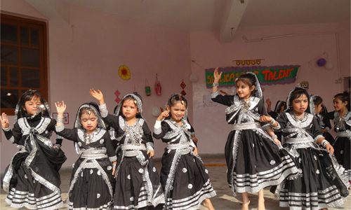
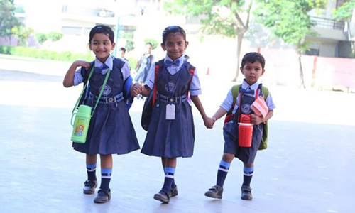

About St.Peter
An online English speech competition is being organized by CMC Amal Jyothi Region Jaipur in collaboration with St. Peter's Convent School, Sector- 88, Greater Faridabad . Last date for the submission of the video is 15th of September 2022 for security and enthusiasm purposes.
St loveable Online English Speech Competition-2022
St. Peter's Convent School feels proud to announce that our Scouts & Guide team did the march-past on Independence Day 2022 in sector-12, Faridabad and achieved second position. There were 32 students in the march-past. Our PTI Ms. Bimlesh and Mr. Jatin were spectating our students for security and enthusiasm purposes.
Parade Including Patriotism
Fifteenth August is an important day in the history of India. On this day in 1947, our country became free from the long imprisonment of the British rule. Since 1947, fifteenth August is celebrated every year with great joy and pride. It reminds us the great struggle of our freedom from the British rule.The great sacrifice for our freedom fighters
Independence- Our Pride!
St. Peter's Convent School is presenting our Olympiad winners at different levels in the year 2020-21 and 2021-22.There were 32 students in the march-past. Our PTI Ms. Bimlesh and Mr. Jatin were spectating our students for security and enthusiasm purposes.eels proud to announce that our Scouts & Guide team is being organized by CMC Amal Jyothi
Result of the Olympiad 2020-21 & 2021-22
We are electrified to announce the results of the competition held on 30th of July 2022 i, Faridabad.Total 60 schools participated in it and among all the schools our school stood first rank in two categories. We were impressed by the originality.of some of the entries and it looked as if our students really got engaged with the activities
Accomplishment
Driti Bharati from grade V C from grade Won gold medal for best performance got the certificate for appreciation for the same. We give our best wishes to the team Ms. Swati Trivedi ,Ms. Divya Choudhary and to our peterians for their mind blowing performance and are wishing them good luck for their upcoming performances.
Attainment
ST PETER'S SCHOOL GALLERY





Recent Posts
ONLINE
INTERNATIONAL YOGA DAY CELEBRATIONS (2021)
June 06, 2021
PERIODIC ASSESSMENT – 1
(2021-22)
June 06, 2021
Quiz Club Inauguration
June 06, 2021
Art club
June 06, 2021
Find Us On Facebook